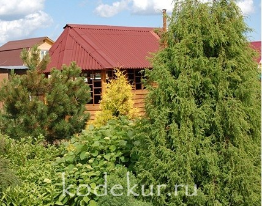
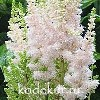
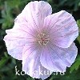
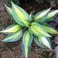

ДЕкоративных
КУльтуР
Собственное производство
Главная
 Коллекция Декоративных КультуР (КОДЕКУР) является частной и размещена во Владимирской области вблизи города Киржача.
Все растения выращиваются своими силами на площади около 30 соток. Коллекция начала формироваться с 2002 года и в настоящее время содержит около 2 000 таксонов многолетних декоративных растений для открытого грунта. Все размещённые на сайте растения адаптированы к климату средней полосы России.
С ПОРЯДКОМ ЗАКАЗА РАСТЕНИЙ МОЖНО ОЗНАКОМИТЬСЯ В РАЗДЕЛЕ АССОРТИМЕНТ.
Отдельные культуры размножены в количестве, достаточном для оптовой реализации. С порядком заказа оптовых партий можно знакомиться в разделе ДЛЯ ОПТОВИКОВ.
Подробное описание и фотографии растений из моей коллекции представлены в разделах Каталога : ДЕКОРАТИВНЫЕ КУСТАРНИКИ , ДЕКОРАТИВНЫЕ ТРАВЫ , МНОГОЛЕТНИЕ РАСТЕНИЯ и ХВОЙНЫЕ.
В разделе КОНТАКТЫ найдёте информацию о том, как меня найти.
Все фотографии выполнены только на собственном участке и при их использовании ссылка на мой сайт обязательна.
ДЛЯ ПОИСКА НУЖНОГО РАСТЕНИЯ МОЖНО ИСПОЛЬЗОВАТЬ ПОИСКОВИК ПО САЙТУ, КОТОРЫЙ НАХОДИТСЯ СЛЕВА НИЖЕ МЕНЮ.
Постепенно количество отдельных культур стало настолько представительным, что их можно выделить в отдельные коллекции:
|  |  |  |
 | ||||